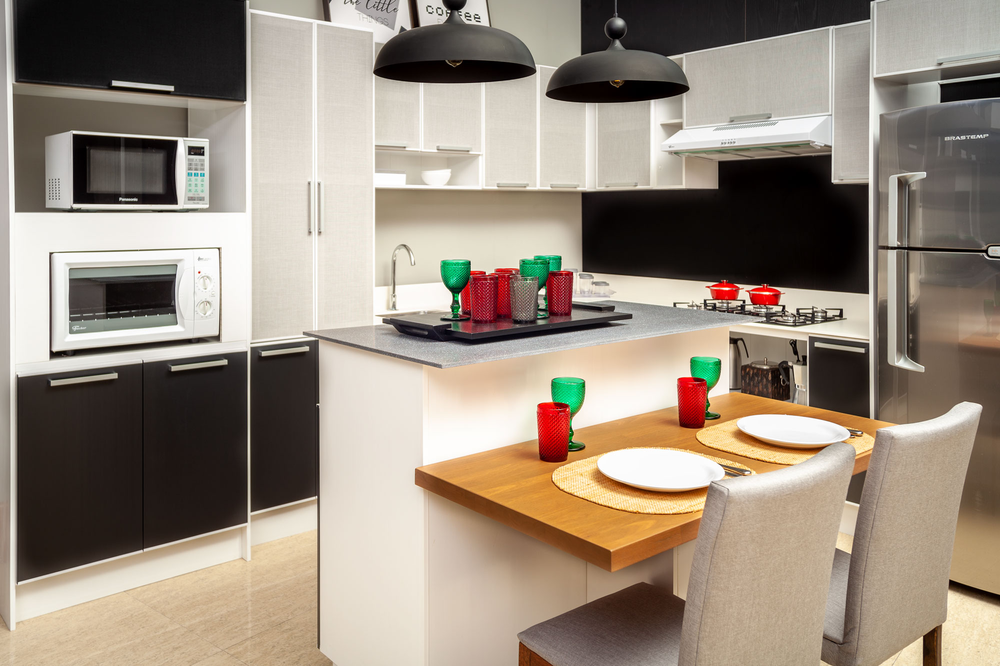

MARCENARIA WILCHAK
Móveis_Planejados
Móveis_Planejados
Outra tarefa de centralização consiste em centrar não um texto, mas um bloco como um todo. Dito de outra forma: definir margens esquerda e direirta iguais par um bloco. Para obter esse efeito usamos o valor 'auto' para a proriedade margin. É necessário que o bloco tenha uma largura fixa, pois em se tratando de blocos flexíveis ele assumira a largura total disponível. Observe o exemplo a seguir:Outra tarefa de centralização consiste em centrar não um texto, mas um bloco como um todo. Dito de outra forma: definir margens esquerda e direirta iguais par um bloco. Para obter esse efeito usamos o valor 'auto' para a proriedade margin. É necessário que o bloco tenha uma largura fixa, pois em se tratando de blocos flexíveis ele assumira a largura total disponível. Observe o exemplo a seguir:Outra tarefa de centralização consiste em centrar não um texto, mas um bloco como um todo. Dito de outra forma: definir margens esquerda e direirta iguais par um bloco. Para obter esse efeito usamos o valor 'auto' para a proriedade margin. É necessário que o bloco tenha uma largura fixa, pois em se tratando de blocos flexíveis ele assumira a largura total disponível. Observe o exemplo a seguir:Outra tarefa de centralização consiste em centrar não um texto, mas um bloco como um todo. Dito de outra forma: definir margens esquerda e direirta iguais par um bloco. Para obter esse efeito usamos o valor 'auto' para a proriedade margin. É necessário que o bloco tenha uma largura fixa, pois em se tratando de blocos flexíveis ele assumira a largura total disponível. Observe o exemplo a seguir:Outra tarefa de centralização consiste em centrar não um texto, mas um bloco como um todo. Dito de outra forma: definir margens esquerda e direirta iguais par um bloco. Para obter esse efeito usamos o valor 'auto' para a proriedade margin. É necessário que o bloco tenha uma largura fixa, pois em se tratando de blocos flexíveis ele
assumira a largura total disponível. Observe o exemplo a seguir:Outra tarefa de centralização consiste em centrar não um texto, mas um bloco como um todo. Dito de outra forma: definir margens esquerda e direirta iguais par um bloco. Para obter esse efeito usamos o valor 'auto' para a proriedade margin. É necessário que o bloco tenha uma largura fixa, pois em se tratando de blocos flexíveis ele assumira a largura total disponível. Observe o exemplo a seguir:Outra tarefa de centralização consiste em centrar não um texto, mas um bloco como um todo. Dito de outra forma: definir margens esquerda e direirta iguais par um bloco. Para obter esse efeito usamos o valor 'auto' para a proriedade margin. É necessário que o bloco tenha uma largura fixa, pois em se tratando de blocos flexíveis ele assumira a largura total disponível. Observe o exemplo a seguir:Outra tarefa de centralização consiste em centrar não um texto, mas um bloco como um todo. Dito de outra forma: definir margens esquerda e direirta iguais par um bloco. Para obter esse efeito usamos o valor 'auto' para a proriedade margin. É necessário que o bloco tenha uma largura fixa, pois em se tratando de blocos flexíveis ele assumira a largura total disponível. Observe o exemplo a seguir:Outra tarefa de centralização consiste em centrar não um texto, mas um bloco como um todo. Dito de outra forma: definir margens esquerda e direirta iguais par um bloco. Para obter esse efeito usamos o valor 'auto' para a proriedade margin. É necessário que o bloco tenha uma largura fixa, pois em se tratando de blocos flexíveis ele assumira a largura total disponível. Observe o exemplo a seguir:Outra tarefa de centralização consiste em centrar não um texto, mas um bloco como um todo. Dito de outra forma: definir margens esquerda e direirta iguais par um bloco. Para obter esse efeito usamos o valor 'auto' para a proriedade margin. É necessário que o bloco tenha uma largura fixa, pois em se tratando de blocos flexíveis ele assumira a largura total disponível. Observe o exemplo a seguir:Outra tarefa de centralização consiste em centrar não um texto, mas um bloco como um todo. Dito de outra forma: definir margens esquerda e direirta iguais par um bloco. Para obter esse efeito usamos o valor 'auto' para a proriedade margin. É necessário que o bloco tenha uma largura fixa, pois em se tratando de blocos flexíveis ele assumira a largura total disponível. Observe o exemplo a seguir:Outra tarefa de centralização consiste em centrar não um texto, mas um bloco como um todo. Dito de outra forma: definir margens esquerda e direirta iguais par um bloco. Para obter esse efeito usamos o valor 'auto' para a proriedade margin. É necessário que o bloco tenha uma largura fixa, pois em se tratando de blocos flexíveis ele assumira a largura total disponível. Observe o exemplo a seguir: